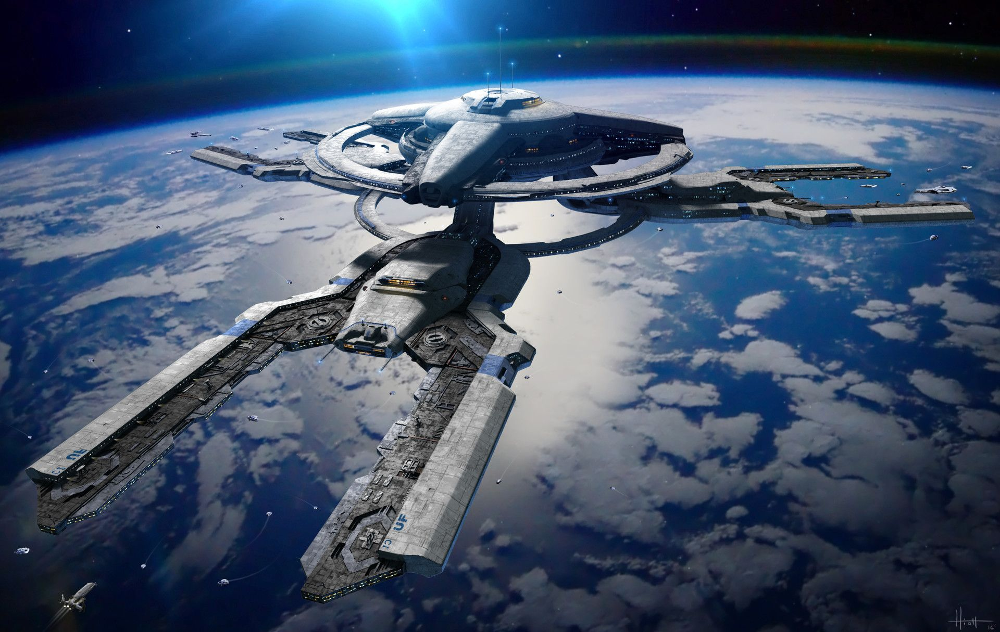

Stacja kosmiczna

Jeżeli marzyłeś o tym, aby wylecieć w przestrzeń kosmiczną ale martwiłeś się o nocleg albo sąsiad nie daje ci
żyć i chciałbyś od niego odpocząć, to jesteś w dobrym miejscu.
Na tej stronie możesz zarezerwować miejsce na ultra nowoczesnej stacji kosmicznej krążącej po niskiej orbicie
okołoziemskiej na wysokości 1500km.
Zastosowana została tutaj najnowocześniejsza technologia do wytwarzania sztucznej grawitacji dzięki czemu
ciążenie jest zbliżone do ziemskiego. Stacja została przystosowana nie tylko do podziwiania niespotykanych na
ziemii widoków,
ale też do rozrywki, której w innych miejscach próżno szukać.
Oferujemy między innymi:
Oferujemy między innymi:
- Spacery kosmiczne
- Eksperymenty w niskiej grawitacji
- Gry znane z Ziemii ale w stanie nieważkości
- Wyścigi specjalnymi małymi statkami kosmicznymi